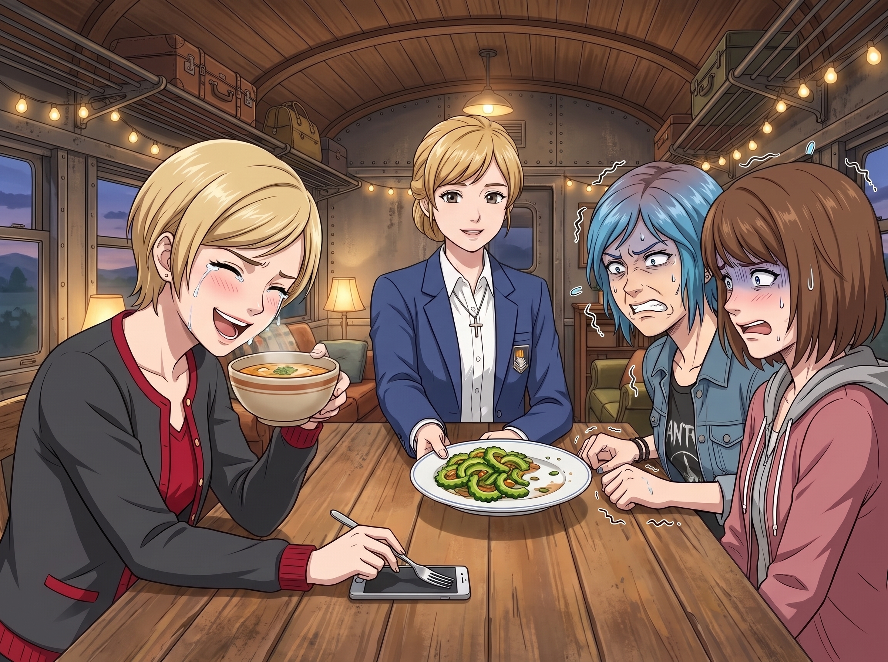
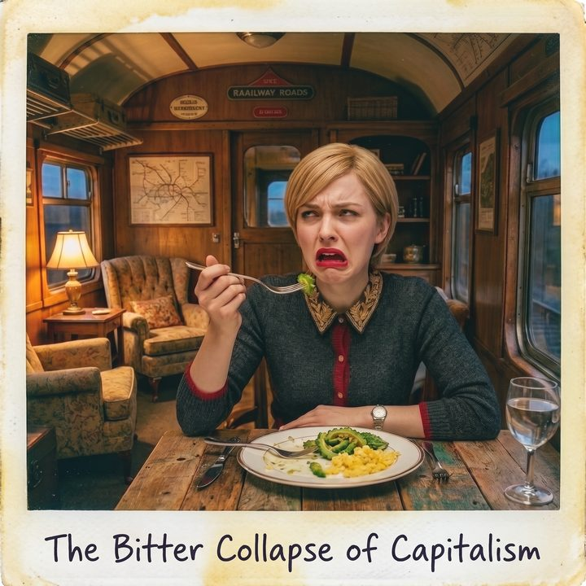

資本主義的苦澀崩塌


一、名媛的隕落
看著 Chloe 和 Max 痛不欲生的扭曲表情，Victoria 端著那碗老火湯，笑得花枝亂顫，甚至連眼淚都笑了出來。
「得了吧，妳們這兩個平民，連一點蔬菜的本味都承受不了。在頂級的法式料理中，微苦是提升層次感的高級味覺！」Victoria 傲慢地放下手機，拿起純銀叉子，「今天就讓 Chase 財團的繼承人來教教妳們，什麼叫作優雅的品鑑……」
話音未落，坐在主位的 Kate 溫柔地把那盤還剩下一半的苦瓜炒蛋，輕輕推到了 Victoria 面前：「Victoria 說得真好。那這半盤就交給妳了哦。」
Victoria 的笑容僵在臉上。但話已經放出去了，她只能硬著頭皮，叉起一小塊苦瓜，以一種品嚐魚子醬的優雅姿態送進嘴裡，甚至還刻意閉上眼睛，準備發表一段關於「層次感」的做作點評。
「咔嚓。」
就在苦瓜的汁液在她舌尖爆開的瞬間，Victoria 大腦裡那個專門負責處理法式高級味覺的晶片，直接燒毀了。
她猛地睜開眼睛，那張原本精緻無瑕的臉，在一秒鐘內經歷了比 Max 還要慘烈的地質板塊擠壓。法式挑眉瞬間塌陷，紅唇不受控制地向兩側拉扯，兩隻眼睛因為過度刺激而翻出了大半個白眼，看起來就像一隻不小心吞了黃蜂的高貴波斯貓。
「咔嚓！」Max 不知何時已經舉起了相機，精準地抓拍到了這張名為《資本主義的苦澀崩塌》的絕世佳作。
「噗——咳咳咳！」Victoria 再也無法維持體面，直接把苦瓜吐在餐巾裡，抓起水杯狂灌：「這不是蔬菜！這是化學武器！Lily！妳是不是把洗畫筆的松節油倒進去了？！」
「這就是原味哦，Victoria 學姐。非常健康的。」Lily 推了推眼鏡，笑容純潔無瑕。
二、資本主義的代吃服務
三天後，Lily 再次將一盤翠綠的苦瓜炒蛋端上了餐桌。
這一次，Max 和 Chloe 已經學聰明了，提前十分鐘以「要去五金行買螺絲」為由開著皮卡落荒而逃。餐桌上，只剩下剛開完線上會議、飢腸轆轆的 Victoria，以及那盤散發著惡魔氣息的綠色植物。
「Kate 學姐去教堂做禮拜了，大概還有一小時回來。Victoria 學姐，請務必趁熱吃，我先去整理一下回函。」Lily 交代完後，便轉身走進了辦公區。
Victoria 盯著那盤苦瓜，眼神裡充滿了恐懼與絕望。就在這時，畫廊的後門被敲響了。一個熟悉的身影探出頭來，手裡拎著一個包裹：「打擾一下，Chase 小姐？這裡有您訂購的畫框——」
Victoria 定睛一看，皺起眉頭：「……又是妳？」
正是那位差點在 Lo-Fi 事件裡撥打 911 的兼職外賣員 Emma。她有些不好意思地聳了聳肩：「反正送外賣跟送包裹都是送，我最近手頭緊，就順手多接了幾家快遞平台的零工。妳們家算是我這條路線上最大方的客戶了。」
Victoria 的眼睛突然一亮，名媛的資本主義DNA瞬間覺醒了。
她踩著高跟鞋走到 Emma 面前，從皮夾裡直接抽出一張百元大鈔，拍在了簽收板上：「看到那盤綠色的東西了嗎？給妳三分鐘，把它吃得一乾二淨，這一百塊就是妳的。」
Emma 看了看那盤看似無害的炒菜，又看了看手裡的一百美金，嚥了一口口水：「就……就吃個菜？成交！妳們家的委託真的一次比一次奇怪。」
兩秒鐘後，Emma 的臉變成了豬肝色，眼淚瞬間奪眶而出，但她看著手裡的一百美金，硬是憑藉著頑強毅力，一邊流淚一邊痛苦地咀嚼著。
三、聖光與黑魔法的雙重制裁
就在 Emma 即將把最後一口苦瓜嚥下去的瞬間，提前結束禮拜的 Kate，以及剛好拿著文件從辦公室走出來的 Lily，同時出現在了門口。
空氣在這一刻凝固了。
Kate 那原本溫柔的微笑，在一瞬間消失了。「Victoria。」她的聲音輕得像一陣微風，卻讓 Victoria 的靈魂都跟著打了個寒顫，「妳在做什麼？」
「我……我這是在做慈善！」Victoria 結結巴巴地後退了一步。
Kate 沒有發火。她只是溫柔地走上前，拿過 Emma 手裡的空盤子，端出一碗溫熱的老火湯遞給她：「辛苦你了，Emma。喝點熱湯緩解一下吧。這一百美金是妳應得的，慢走。」
等 Emma 心有餘悸地離開後，站在 Kate 身後的 Lily 已經翻開了那本可怕的黑色筆記本：「Victoria 學姐，根據二號車廂互助與健康管理臨時條例第三條：健康合規義務不可轉讓。您利用資本優勢，將自身的健康義務外包給不知情的第三方，這在行政邏輯上屬於典型的欺詐性風險轉嫁。」
四、無法逃避的終極懲罰
Kate 輕輕嘆了口氣，拉起 Victoria 微微發抖的手：「Victoria，浪費食物已經很不應該了，但用金錢去買別人的痛苦，這不是我們家人之間該有的行為哦。既然妳這麼喜歡分享，那明天、後天、大後天這三天的晚餐，妳的份量都是雙倍的苦瓜。而且，我會親自坐在妳對面，看著妳吃完。好嗎？」
Victoria 的膝蓋一軟，差點跪在地毯上：「Kate……我錯了……我給你買最新款的烤箱好不好？放過我的味蕾吧……」
「不行的哦，Victoria。健康是用錢買不到的。」Kate 溫柔地拍了拍她的手背，轉向 Lily，「Lily，麻煩妳明天去華人超市，再買五條最綠、苦味最重的苦瓜回來。」
「好的，Kate 學姐，我會挑選表面顆粒最密集的極品苦瓜。」Lily 乖巧地鞠了一躬。
當晚，得知此事的 Chloe 和 Max 在車廂外笑得直不起腰。而 Victoria 則把自己鎖在房間裡，絕望地意識到：在這個二號車廂裡，她的百億身家，甚至抵不過一盤翠綠的、帶著無產階級憤怒的苦瓜炒蛋。